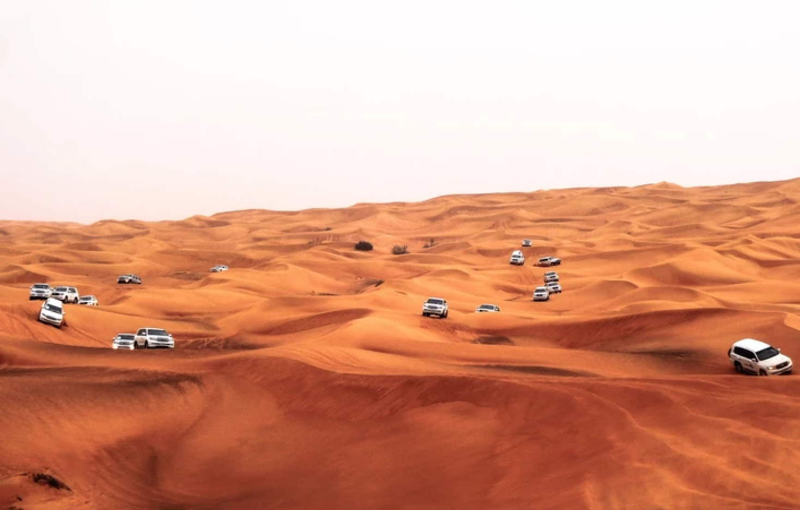
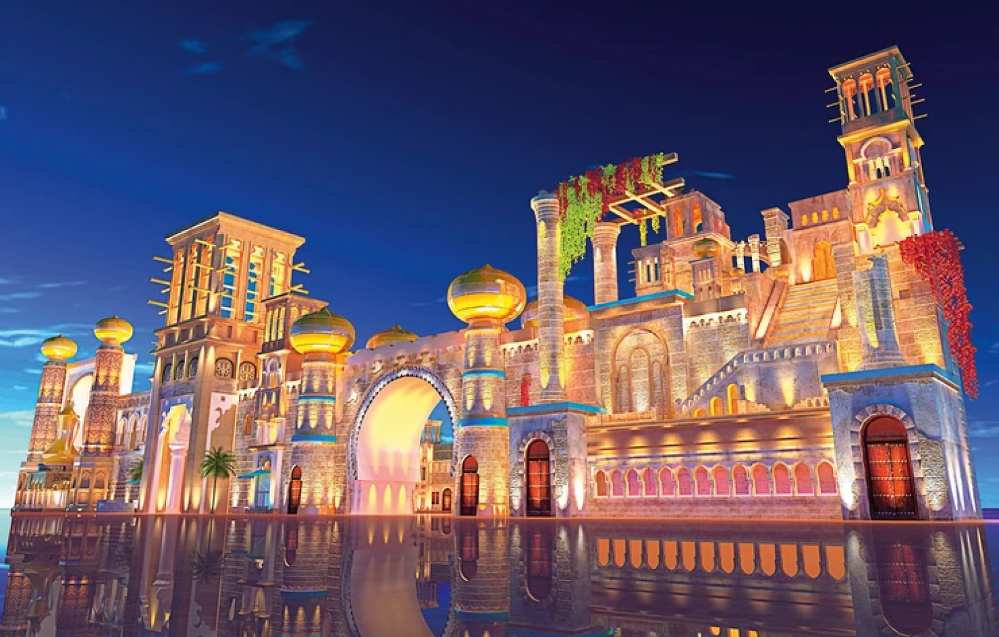
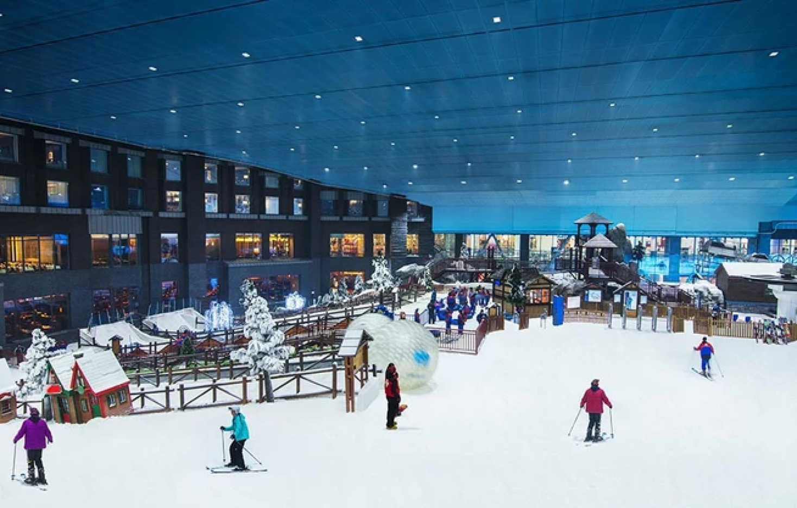
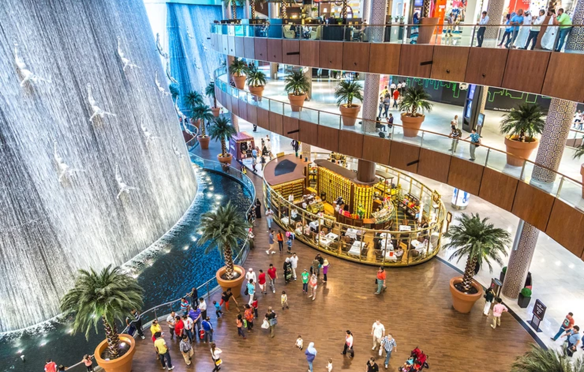
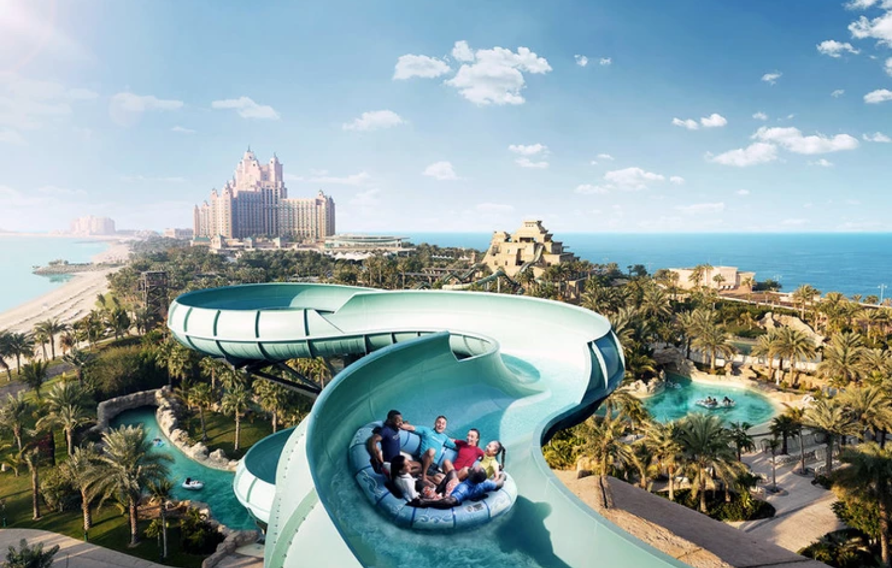
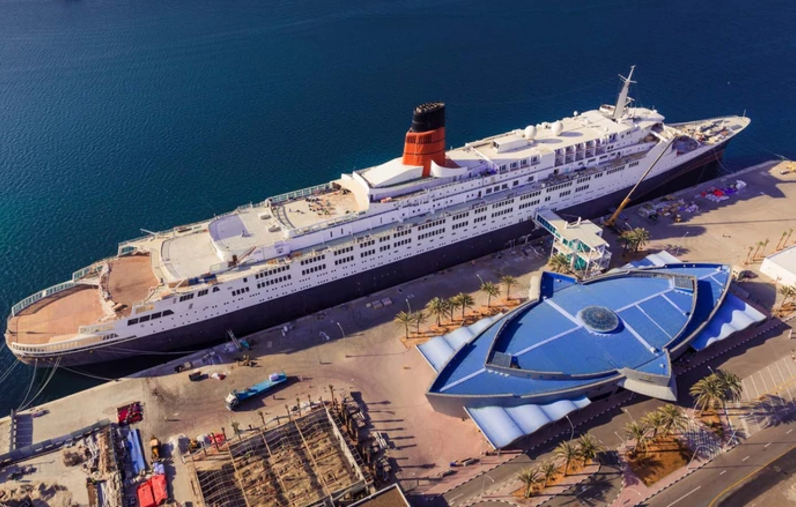
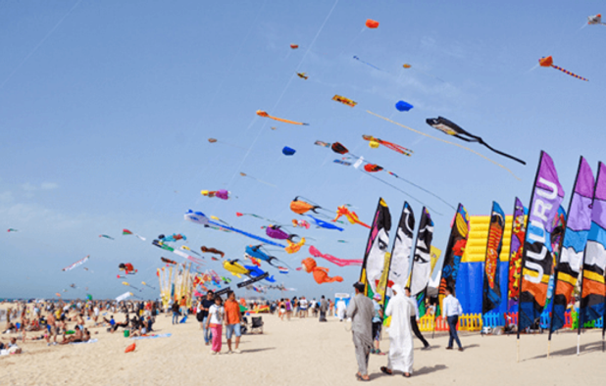

Dubai
The King of All Cities. This is a simple yet perfect description of Dubai. For many, Dubai is not a city; it is an idea that surpasses all human comprehension. When you get to this destination, you will come to realize you have heard just a little of what this city carries. This city perfectly captures and surpasses all imaginations you may have had. As you prepare for this tour, let's introduce you to some of the top sights to explore in Dubai.
Visit Dubai global village
Irrespective of your age, the Dubai global village is a location to explore. It is open from November to April. Top activities include concerts, fun rides, dining, and other fun attractions. You'll know more when you get there.
Ski Dubai
In a desert is a mall, a mall that opens you to one of the most exciting ski experiences. It is the third-largest ski slope in the world. This location has a lot of families coming to enjoy their time. You can also enjoy interesting rides and penguin visits. It's a wonderful destination.
Tour the Dubai mall
You may have visited big malls, but not the biggest if you have not been to Dubai. The Dubai mall is the biggest in the world, accommodating around 100 million visitors each year. This mall has more than 1200 shops; this is undoubtedly the best spot to buy all you need.
Visit the Aquaventure waterpark
Aquaventure is the most popular waterpark in Dubai. This location houses more than 30 attractions and slides. You will enjoy beautiful rides, tour the 42-acre longest lazy river. Tour round waterslides to enjoy adrenaline pumping. Interact with creatures like sea lions, dolphins, and stingray.
Queen Elizabeth 2 Hotel
Even with all the wonderful outdoors sight, you need a nice and comfy hotel. QE2 is one of the best options. This massive ship accommodates hundreds of visitors and allows them to enjoy the rich history of the ship. On the ship are eight bars and restaurants, a movie theatre, and a spa.
Visit the Kite Beach
Do you love visiting the beach? Then this is the top destination for you. Enjoy fun activities like sunbathing, beach volleyball, kite surfing, and enjoy running around the tracks.
Summing it up
These six locations are just a sample of what the experience in Dubai feels like. There are other fabulous tour destinations you should consider visiting in Dubai.